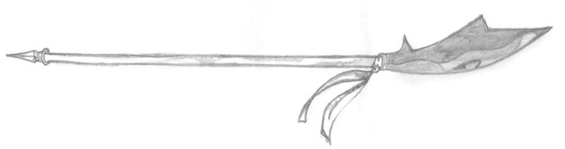
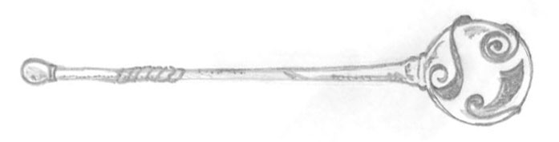
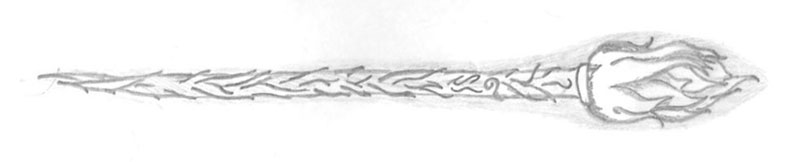
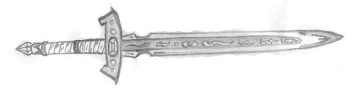
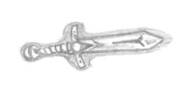
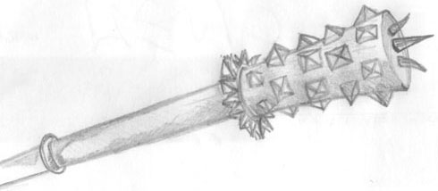
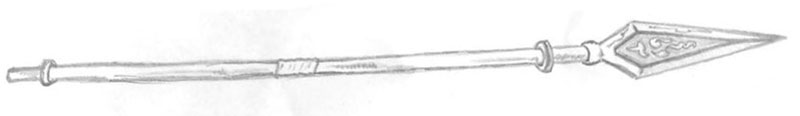
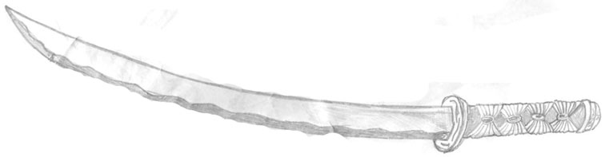
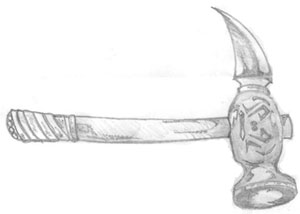

Glaive (Arma ad Asta, Polearm) [by Rodolfo Placella]

Great Mace (Mazze) con Incantamento Magico +2 [by Rodolfo Placella]

Great Mace (Mazze) Arma Rituale di Azatar con Incantamento Minore of Lesser Infernal [by Rodolfo Placella]

Broad Sword (Spade) con Incantamento Magico +1 [by Rodolfo Placella]

Dagger (Pugnali) [by Rodolfo Placella]

Great Mace (Mazze) Buona con Appesantimento Superiore (+1 danno) [by Rodolfo Placella]

Long Sword (Spade) Fattura Superba [by Rodolfo Placella]

Paddle (Arma ad Asta, Lance) [by Rodolfo Placella]

ùKatana (Spade) [by Rodolfo Placella]

Hammer (Martelli) [by Rodolfo Placella]
